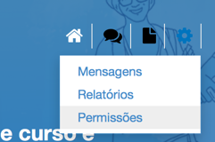
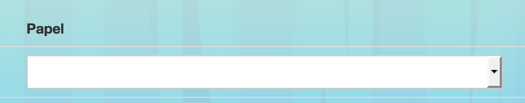
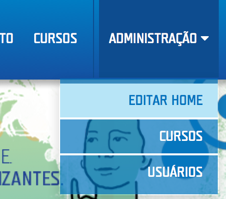
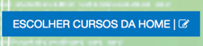

Guia TIM Tec Administrador
Apenas o usuário com permissões de administrador na plataforma pode criar um curso.
Diferenças entre Professor Assistente e Professor Coordenador
Existem dois papéis possíveis para professores na plataforma:
- PROFESSOR ASSISTENTE: O PROFESSOR ASSISTENTE possui permissões de moderação apenas nas turmas específicas às quais está associado.
- PROFESSOR COORDENADOR: O PROFESSOR COORDENADOR possui a permissão de editar o conteúdo e as configurações dos cursos nos quais está associado. Além disso, consegue, assim como o PROFESSOR ASSISTENTE, enviar mensagens, ver os relatórios e moderar os fóruns, porém não só de turmas específicas, mas de todas as turmas dos cursos em que está associado.
Como associar Professores a cursos
Para associar professores coordenadores e assistentes a um curso, acesse a página de permissões do curso através do botão de configurações disponível na barra de ferramentas do curso na área administrativa (Administração > Cursos):

Ao acessar a página de permissões, é exibida uma lista com os usuários associados como professores ao curso em questão. Para associar um novo professor, clique em ADICIONAR USUÁRIO e preencha o campo de pesquisa para buscar o usuário desejado. Para confirmar clique em ADICIONAR USUÁRIO novamente.
Modifique o papel do professor para Assistente ou Coordenador na coluna PAPEL:

Para finalizar, clique em SALVAR no canto esquerdo superior.
Como criar um curso
Primeiramente, é necessário estar na área de administração da plataforma. Para isso, após efetuar seu login, clique no botão escrito ADMINISTRAÇÃO e em seguida clique no item CURSOS.

Após isso:
- Clique no botão CRIAR CURSO localizado à esquerda da página.
- Insira o nome do novo curso na janela que sobrepõe à tela e confirme clicando no botão CRIAR CURSO.
- Clique em cada um dos campos para inserir os dados do curso e salve cada alteração. Veja aqui como preencher cada campo.
- Salve o curso clicando no botão SALVAR. Veja que, aqui, o curso ainda não está visível ao público, mas apenas a você.
- Torne o curso visível ao público na plataforma clicando no botão PUBLICAR.
Descrição dos campos da página inicial do curso
O preenchimento de todo campo é obrigatório. Caso algum campo não seja preenchido, ele será exibido vazio ao aluno.
Veja a seguir a descrição de cada um dos campos. Para preenchê-los, basta clicar sobre eles e editá-los.
- Nome do curso: preencha com o nome do curso. Veja que abaixo deste campo é exibido o link direto para o curso. Este link é gerado automaticamente pela plataforma.
- Vídeo ou Thumbnail: aqui você escolhe se a página inicial do curso terá um vídeo de apresentação ou uma imagem. Caso for um vídeo, clique no botão VIDEO, insira o ID do link do YouTube e clique em ADICIONAR. O ID é a parte final do vídeo que o identifica, por exemplo, no link https://www.youtube.com/watch?v=mIvLsglRZdQ o ID é mIvLsglRZdQ. Caso for uma imagem, clique em THUMBNAIL, escolha o arquivo da imagem e clique em Adicionar.
- Resumo: insira aqui um resumo apresentando o curso. Nossa sugestão é que sejam usadas palavras-chave indicando sobre o que trata o curso.
- ADICIONAR INSTRUTOR: adicione o instrutor que será o responsável pelo curso. Você pode adicionar mais de um instrutor.
- Por que fazer esse curso?: descreva aqui de maneira clara quais são as aplicações dos conhecimentos adquiridos após a conclusão do curso, nos contextos profissional e social do aluno. Pense nas seguintes perguntas: o que posso estudar agora? O que consigo fazer agora? Em que posso trabalhar agora?
-
O que eu preciso saber?: utilize este campo para
descrever dois tipos de requisitos:
- Quais os conhecimentos prévios necessários para realizar este curso.
- Quais os requisitos de infraestrutura para realizar este curso.
- Estrutura: neste campo, explique de maneira sucinta a metodologia do curso, como serão oferecidas as aulas, quais os tipos de atividade, avaliação, enfim, quais os recursos de aprendizagens disponíveis.
- Aulas: este campo contém o principal conteúdo do curso. Aqui, serão inseridas as videoaulas e os vídeos.

Como modificar a página inicial da plataforma
Modifique os cursos que aparecem através do menu Administração > Editar Home.

Na página de edição da home (página inicial) é possível escolher os cursos que serão exibidos, bem como organizar sua ordem de exibição.
Além disso, você também pode editar editar os textos da home que ficam acima do rodapé, caso utilize os temas Padrão ou dos Institutos Federais.
Escolhendo cursos da home
Para escolher os cursos que serão exibidos na home, clique no botão , para que sejam exibidos todos os cursos existentes.
Clique nos cursos desejados e depois no botão OK para confirmar.
Os cursos marcados com o símbolo no canto inferior direito de suas imagens, são os cursos que aparecerão na página inicial. Para que um curso não seja exibido, basta clicar na sua imagem ou título que ele será desmarcado. Após as modificações, clique em OK para confirmar
Organizando o posicionamento dos cursos da home
Através do botão ORGANIZAR CURSOS é possível selecionar a forma com que os cursos escolhidos para serem exibidos na home são dispostos.
Ao clicar em ORGANIZAR CURSOS o símbolo aparecerá em cima dos cursos da home. Clique no símbolo do curso desejado e arraste-o modificando a disposição dos cursos.
Após finalizar a organização, clique em SALVAR.